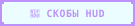
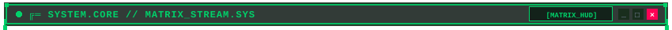
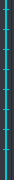
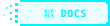
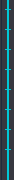
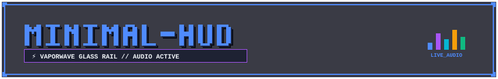

1. Mode A: Open Cyber Brackets (Matrix Theme)
Fixed downward opening prongs. Content indented so it stays strictly within the bracket corners:

🧬 SYSTEM ARCHITECTURE // RUNTIME KERNELLive Markdown text strictly aligned inside brackets: Live pulsing beacon chip 45° chamfered chip |
2. Mode B: Tactical 45° Chamfer & Full Enclosure (Amber Theme)
Full box with animated cascading ladder side rails:
🛰️ TACTICAL TELEMETRY STREAM
|
|
3. Mode C: Minimal Neon Rail & Side Guide Lines (Tokyo Theme)
Subtle 1px neon side guide lines for clean text framing:
|
 |
💫 DISSOLVING PIXEL DECAY ➔ ➔ Fully verified on dark and light themes Documentation stream ➔  |
 |
Header Gallery: All 3 Styles
1. Cyberpunk 3D Workstation (Scanline + Radar):
2. Tactical Military HUD (Hazard Stripes + Sweeping Laser):

3. Minimal Glass & Equalizer:
